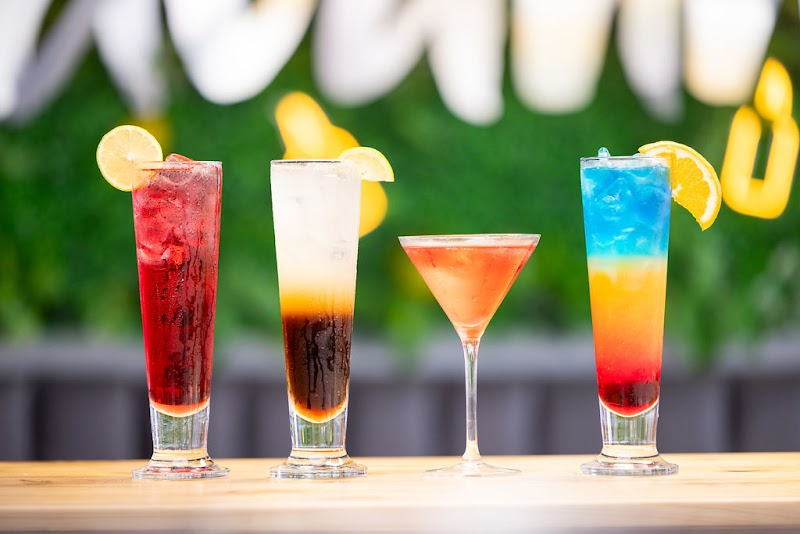
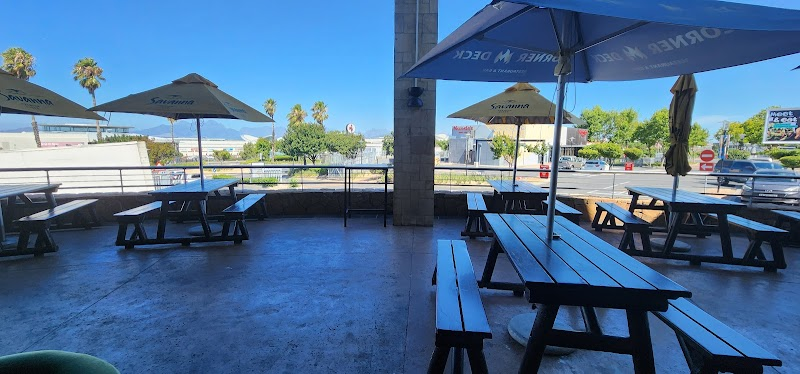

Enjoy a meal with your family at our lovely outdoor deck or comfortable indoor space in Cape Town.
Get In TouchCorner Deck is a cherished spot for families and friends to gather and enjoy mouth-watering pizzas and refreshing drinks. Located in the heart of Cape Town, we pride ourselves on creating a welcoming environment for everyone.
Our story began with a passion for bringing people together over delicious food. From our humble beginnings, we've grown into a favorite local destination, thanks to our dedicated team and loyal customers.
At Corner Deck, we believe in providing not just great food but also a memorable dining experience. Our commitment to quality ingredients and exceptional service ensures that every visit is special.
Explore our range of services designed to enhance your dining experience at Corner Deck.

Our pizzas are crafted with the finest ingredients, offering a variety of toppings to satisfy every craving.

Pair your meal with a selection of refreshing beverages, from classic sodas to crafted cocktails.
Plan your next celebration at Corner Deck! Our venue is perfect for birthdays, anniversaries, and more.
We'd love to hear from you — reach out to us anytime.